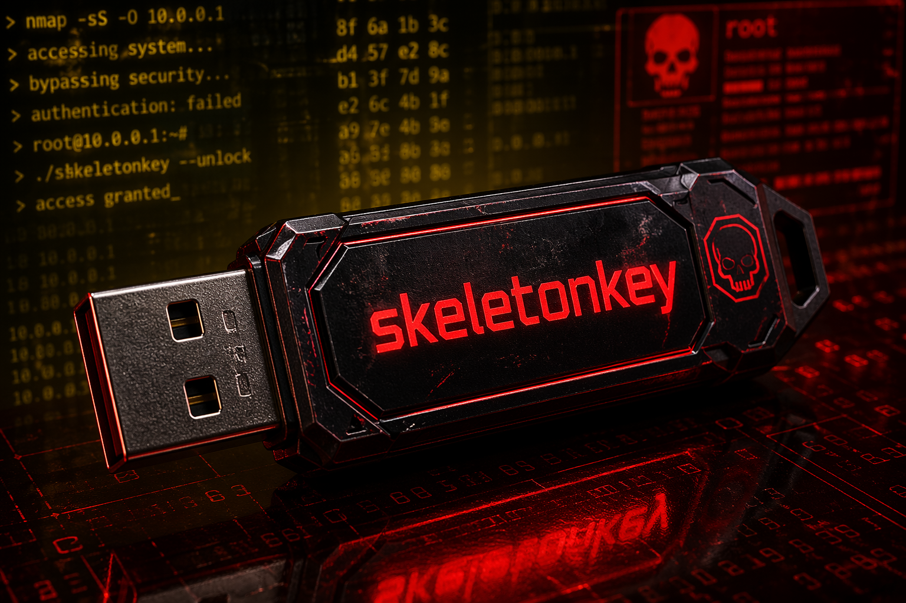

Skull Crusher™


Skull Crusher™ on seuraavan sukupolven tietoturvalaite, joka tarjoaa nopeamman, turvallisemman ja yhteensopivamman ratkaisun kuin mikään aiempi mallimme. Se on suunniteltu suojaamaan dataasi tilanteessa kuin tilanteessa.
Skull Crusher™ hyödyntää sotilastason salausta, joka muuttaa kaiken datan lukukelvottomaksi ulkopuolisille.
Laite vaatii vahvan salasanan ennen kuin se avaa sisäisen muistinsa ja estää luvattoman käytön.
Nopea ja turvallinen PIN‑koodi mahdollistaa laitteen avaamisen ilman pitkiä kirjautumisprosesseja.
Laite lukittuu automaattisesti, jos sitä ei käytetä tai havaitaan epäilyttävää toimintaa.
Skull Crusher™ toimii Windowsin, macOS:n ja Linuxin kanssa ilman erillisiä ajureita.
Skull Crusher™ ‑projektin kehitys käynnistettiin vuoden 2025 alussa, kun Skeletonkey päätti luoda fyysisesti pienen mutta äärimmäisen aggressiivisen tietoturvaratkaisun. Ensimmäiset prototyypit syntyivät nopeasti, mutta niiden matka valmiiksi tuotteeksi oli kaikkea muuta kuin helppo: laitetta hakattiin, murrettiin, kuormitettiin ja altistettiin jatkuville hyökkäyssimulaatioille, kunnes se kesti kaiken sille heitetyn. Vuoden 2025 lopulla Skull Crusher™ saavutti lopullisen muotonsa – kompaktin USB‑tikun, jonka sisällä toimii sotilastason salausmoottori ja reaaliaikainen uhkien torjuntajärjestelmä. Se on suunniteltu toimimaan hiljaa, nopeasti ja armottomasti, ja siitä tuli nopeasti Skeletonkeyn lippulaivatuote: pieni metallinen vartija, joka suojaa käyttäjänsä dataa hinnalla millä hyvänsä.
Kuuma, tuore ja armoton – Skull Crusher™ on suunniteltu niille, jotka eivät hyväksy kompromisseja tietoturvassa. Sen sisällä toimii sotilastason salausjärjestelmä, joka lukitsee kaiken datan kuin digitaalinen panssari. Jokainen bittivirta kulkee sen sisällä kuin tulikuuma metalli ahjon läpi: puhdistettuna, suojattuna ja täysin hallittuna. Skull Crusher™ ei ole vain tallennuslaite, vaan portinvartija. Se tunnistaa luvattomat yritykset ja reagoi niihin välittömästi. Sen sisäänrakennettu turvamoottori analysoi, eristää ja neutraloi uhat ennen kuin ne ehtivät edes koskettaa dataasi. Se on kuin digitaalinen vartija, joka ei koskaan nuku eikä epäröi. Ja silti, kaikesta voimastaan huolimatta, Skull Crusher™ on saumattoman yhteensopiva vanhojen ja uusien järjestelmien kanssa. Se toimii nopeasti, hiljaisesti ja luotettavasti, kuin varjo joka kulkee rinnallasi.